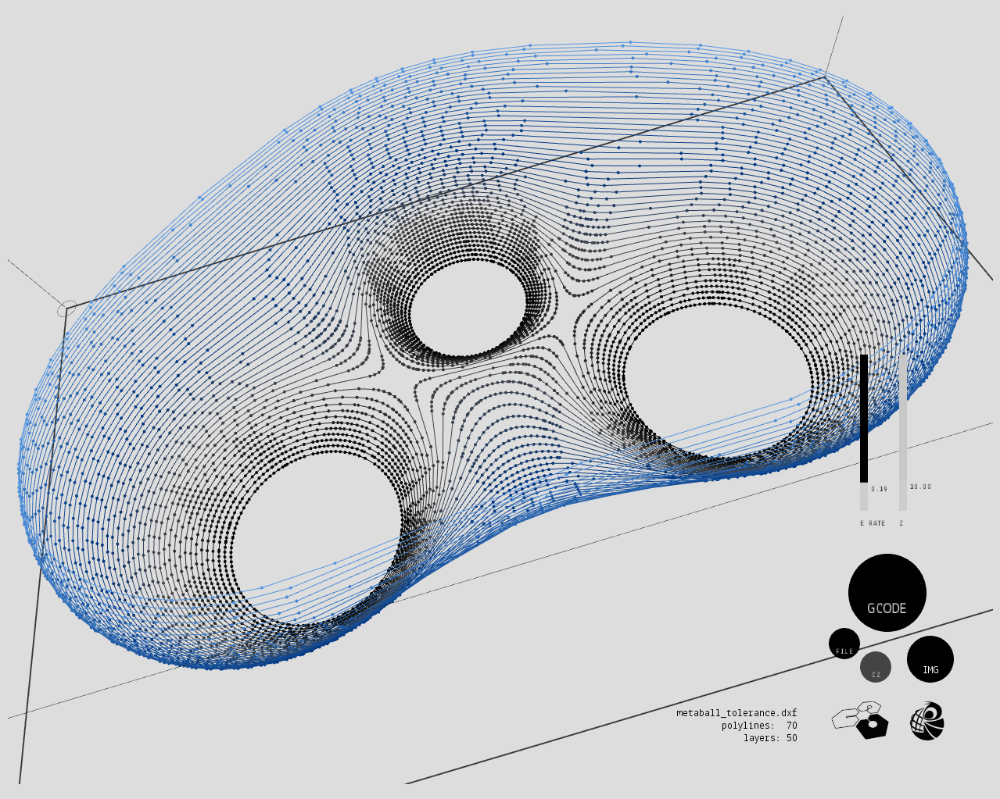
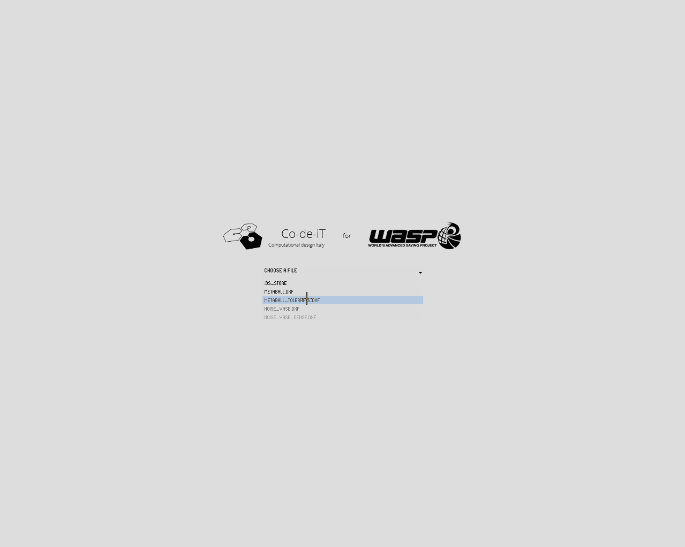

WASP GCode maker
Exports GCode for WASP
. about the dxf
DXF file must contain the polylines for each printing layer. The polylines MUST be joined. If exporting from Rhino, use the "2004 - Polylines" export template, with the only modification of unchecking "explode polylines" (polylines MUST be joined and NOT exploded)
units: mm

. DXF files import

Place your .dxf files in the dxf_data sub folder, then run the sketch. Files will be read automatically and appear in the splash screen.
. graphics
Print layers go from black to light blue in order of printing (so black should be at the bottom in standard printing processes)
. sketch navigation
the sketch uses PeasyCam, navigation is as follows:
. ORBIT: click and drag LMB . PAN: click and drag RMB . ZOOM: mouse wheel . RESET VIEW: double click LMB or RMB
. buttons and sliders
. GCODE: you know what this one does... . IMG: exports a screenshot of the current view . FILE: goes back to splash screen to choose a file . CZ: toggle for custom Z (grey = inactive)
. Z: custom Z value (active only if CZ is on) . E RATE: custm E(xtrusion) Rate for GCode
. exported files
exported GCode and screenshots go in a folder on your desktop.
none so far (write the one you find here)
. make nodes as a class with embedded GCode . G-Code live preview in polyline nodes when mouse over . ability to set print bucket size